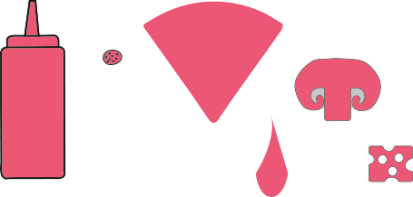
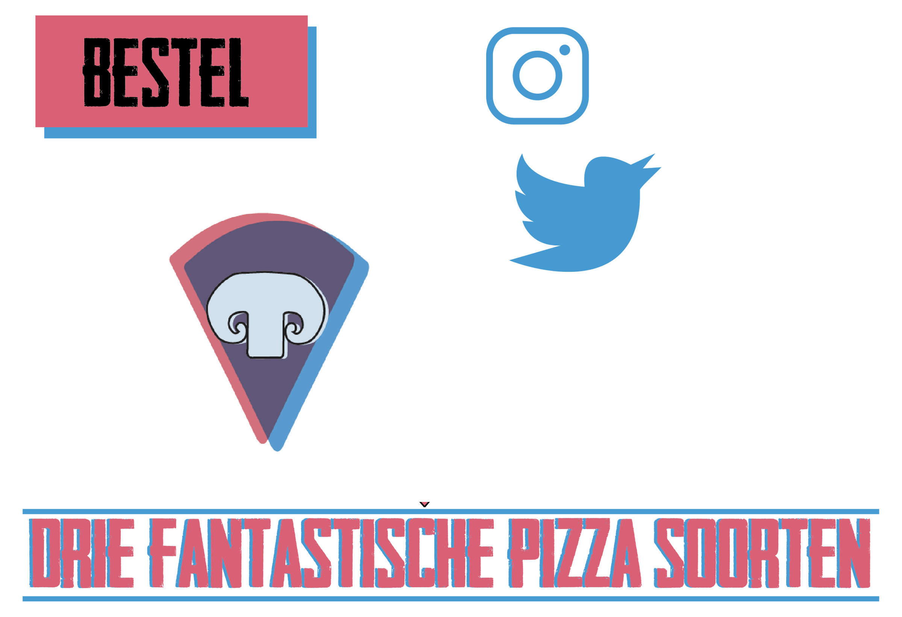
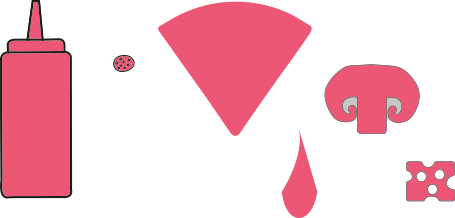
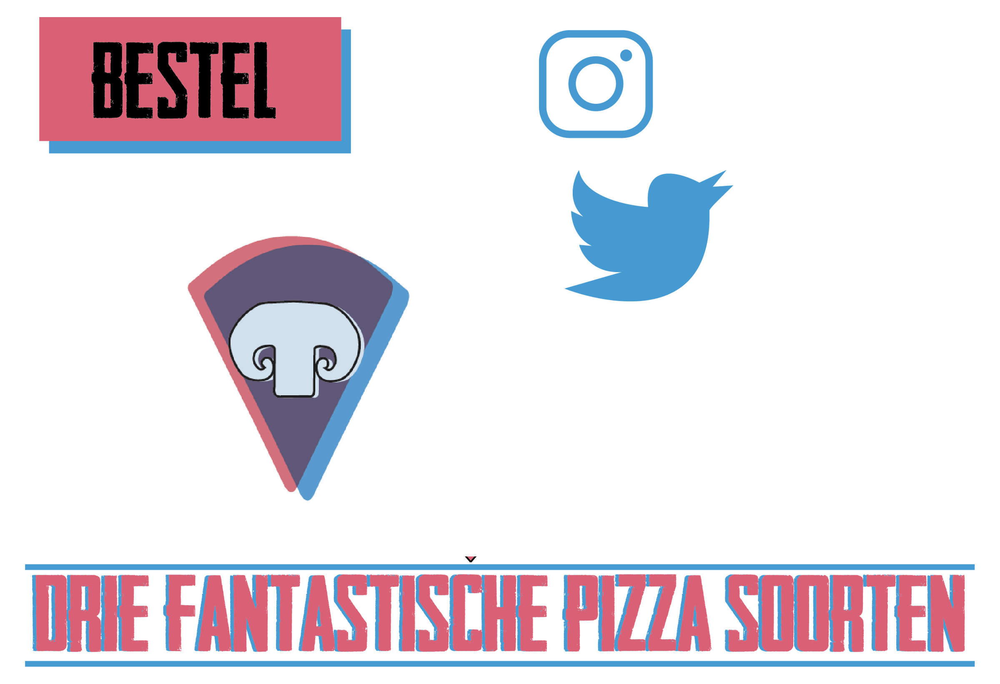

The best Pizza ever
Mijn eerste vormgeef project, we kregen de opdracht om een one page website vorm te geven over onze favoriete eten. Hierbij kregen we een stijl, mijn stijl voor dit project was: lagering and overprinting. Ik vond het erg leuk om dit te maken. Naar mijn mening is dit ook één van de mooiste eindresultaten die ik heb gehad. De kleuren en de manier waarop ik de stijl heb toegepast vind ik erg leuk.
Inspiratie en onderdelen
 


